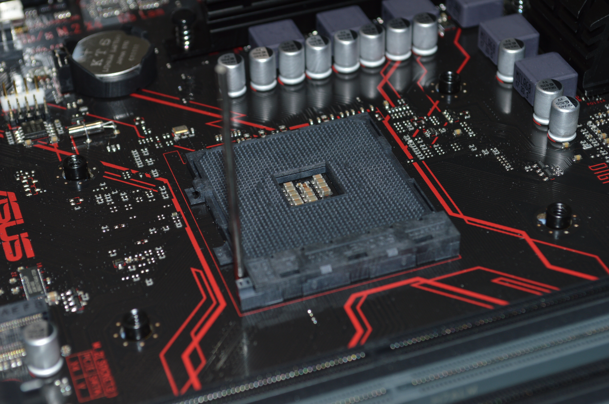

la carrera de computacion e informatica trata sobre los conocimientos para realizar el analisis, desarrollo e implementacion de sistemas y soluciones informaticas. El profecional de esta carrera esta capacitado para desarrollar sistemas de informacion y lograr soluciones integrales que contribuyan con el incremento de la productividad de las organizaciones, sobre la base del manejo de las tecnologias de la informacion y el desarrollo de competencias personales y laborales. Tienen dominio de la fincion de computadora, sus fallas, las tecnicas de manejo adecuado para el cuidado de la informacion.
Con la carrera de computacion e informatica podras trabajar realizando el diseño analisis implementacion eficiencia y aplicaion de los procesos que transforman informacion en empresas publicas y privadas en las areas de administracion, diseño desarrollo y soporte informatico, proveyendo solociones que posibiliten un optimo
La importancia de la computación radica en la globaliozación que esta surgiendo en el mundo a la modernización de tareas métodos enseñanzas, la computación esta acaparando la mayoría de los ámbitos en todo el mundo desde calibración de instrumentos hasta consolas de videjuegos o control de empresas, infinidad de cosas es por eso que es muy importante la computación, ayuda a facilitar las tareas ha realizar de la humanidad, tal vez a un no las resuelva todas pero es cuestión de tiempo para que se invente algo mas.